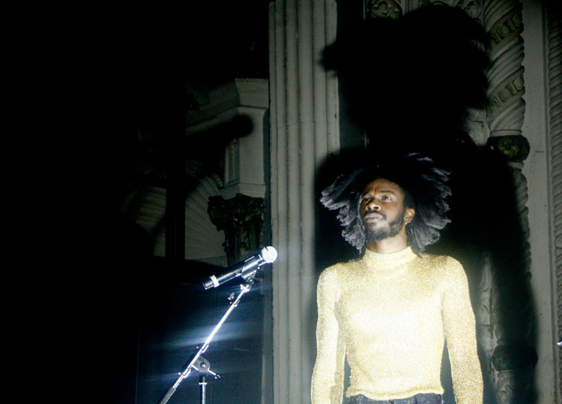

Jessie Ware: Metro Chicago
When Jessie Ware looks back at her life on the stage performing in front of sold out crowds, will she remember them as the wildest moments of her life? Will she remember her adoring Chicago fans? The stage proposals? The couple in the crowd that was once together, and then broken up, but brought new lovers to another show of hers? Will she remember the chocolate chip-less cookies, the zucchini bread, the screaming banshees, and performing a seemingly effortless show while she was under the weather?
The answer to these questions is yes, because she shared them all with us Monday night at Metro. The UK songstress proved that she is far more than just a singer, she is a comedienne, storyteller, entertainer, and very humble human, as she had the crowd cackling on their feet, singing her praises and all up in their feelings throughout the course of the evening.
It was a tale of Jessie and Jesse. Opening for Ware was the stylish indie R&B singer Jesse Boykins III. He warmed up the crowd with his sensual and funky dance moves, lavish love songs, winning smile and stage energy. Before the night was through everyone had realized there was nothing “plain” about him, which would be hard to miss considering he was wearing a skin tight gold sequin muscle shirt. He was having so much fun, getting the crowd to sing along and dance he almost forgot to introduce himself.
He performed some of his popular songs “B4 the Night is Through,” and “Plain,” and you could hear the ladies cooing in the audience. I had the honor to stand next to Jesse Boykins The Second and several of his family members who were in the house that night. He thanked Chicago and took a picture on stage to document the experience before introducing Jessie Ware to the stage.
The lights dimmed and Ware sauntered onto the stage in all black smiling and waving at the screaming crowd before taking the microphone and belting out the first songs of her Tough Love Tour, “Running,” and Champagne Kisses.” Ware has got some loyal fans who have followed her rise to fame, from her early beginnings playing at Lincoln Hall, to the sold out Metro show. Ware said she has fond memories of Chicago, her roots here running deep despite her being from the UK. She has ghosted on many major star’s lyrics and songs, including Chicago’s Chance The Rapper, and has begun to make waves stateside since her debut album Devotion and recent sophomore album, Tough Love.
Ware who reportedly said she had a cold, apologized profusely to the audience for singing off key and delivering such a poor performance, when in actuality she was quite flawless, despite a minor lyric flub where she tripped over her words. She is a modern day Sade; her songs seep in your soul, make you miss lovers lost, and wave your hand in the air and clench your heart during songs like “You & I Forever” “No to Love” and “ Kinda, Sometimes, Maybe,” co-written by R&B lothario, Miguel. “You keep haunting my nights/ You keep asking me twice/ If I miss you at all/ And I won’t lie though I try/ kind of, sometimes, maybe.” If love didn’t break your heart, her performance of her song “Pieces” did; however Ware’s pianist delicately put it back together with his amazing skills on the keys during a solo break during “Want a Feeling.”
Ware is cheeky and comfortable on stage. Dropping F bombs and comedic anecdotes, she was more than interactive with the audience. She had full conversations with people, signed a CD on stage, took a selfie for a fan, and chastised girls who were screaming at her too loudly when she was talking in a sarcastic English fashion. And they loved it. The crowd also roared when she did her hit song “Wildest Moments,” an anthem like song, reminding the crowd that in love, you can be the greatest or the worst of all. The same goes for a sick singer, and Ware proved that she fell into the realm of greatest. She ended the night with “Say You Love Me,” and oh did they say it.
Jesse Boykins III
Jessie Ware: "Wildest Moments"
For more about Jessie Ware:
http://jessieware.com
Jessie Ware on Facebook
photo credits: ciera mckissick